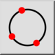
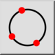
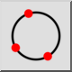
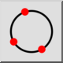

3 točke
Toolbar / Icon:
 

Menu: Risanje > Krog > 3 točke
Shortcut: C, 3
Commands: Circle3P | c3
Toolbar / Icon:
 

Menu: Risanje > Krog > 3 točke
Shortcut: C, 3
Commands: Circle3P | c3
Konstruira krog iz treh znanih točk na krožnici.